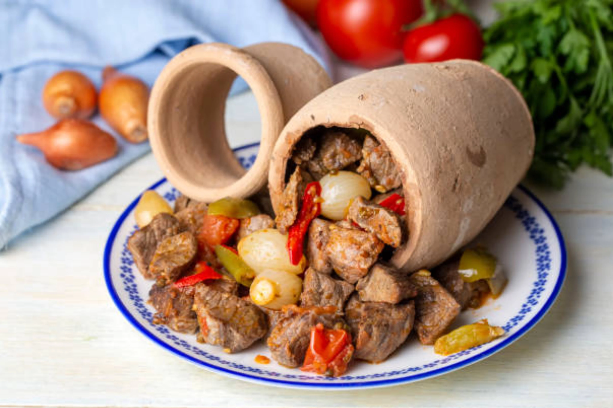
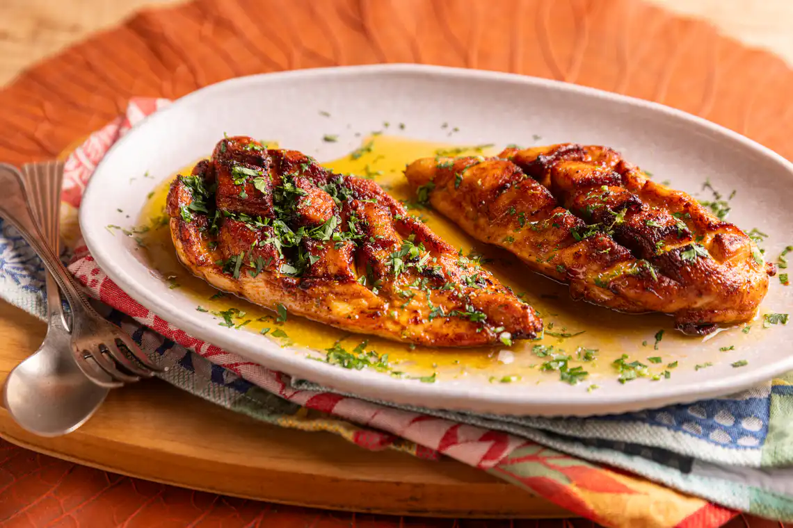
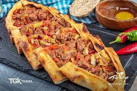
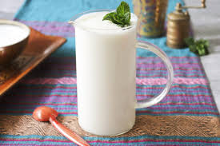
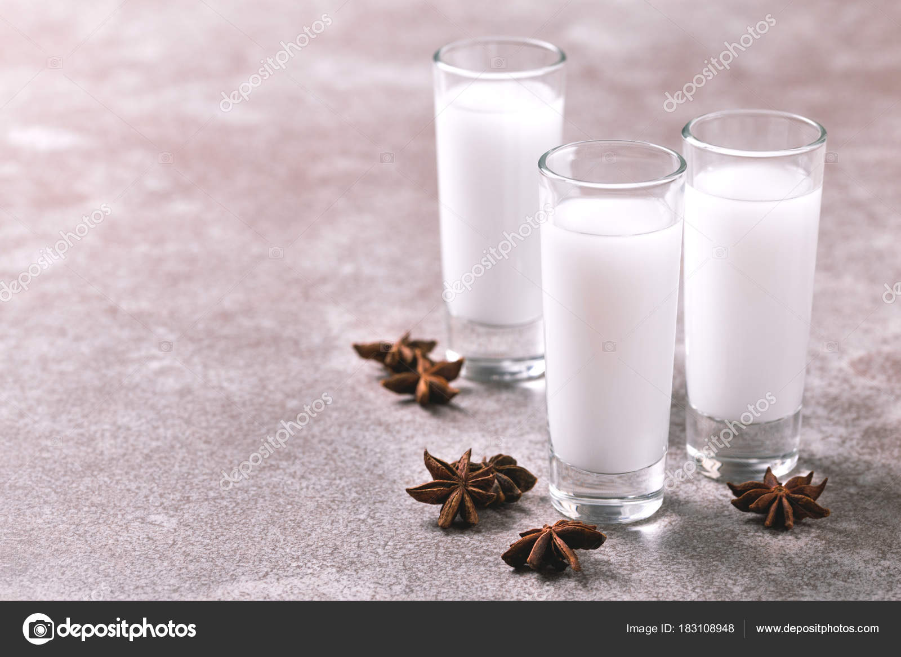
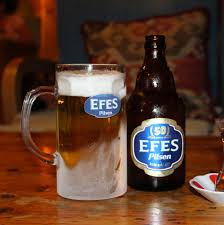
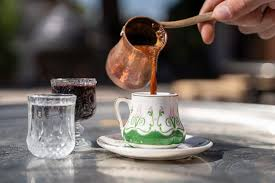
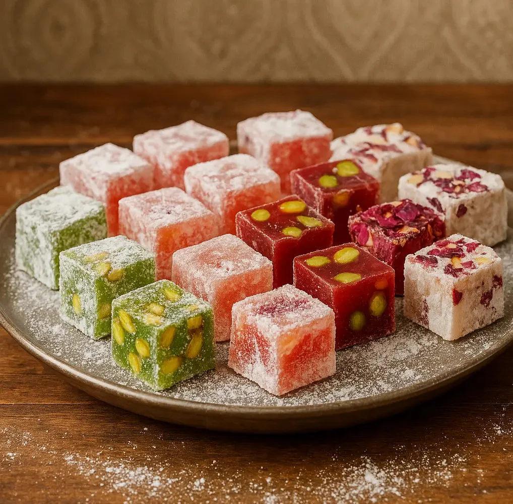

Culinária
A cozinha turca, rica em massas, vegetais, carnes, peixes e doces, tem exercido muita influência sobre as cozinhas de muitos países ao redor. Beneficiária da herança otomana e da localização geográfica do país, a gastronomia turca se caracteriza pelo cruzamento de sabores da Ásia e do Mediterrâneo Oriental e foi enriquecida em razão das migraçãos turcas ao longo dos séculos, desde a Ásia Central até a Europa. As tradições do passado se conservam e a variedade climática da Turquia também contribui para a preservação da heterogeneidade da sua cozinha. Entre os elementos trazidos da Ásia Central pelos turcos estão o+ iogurte e o yufka, uma fina massa filo, que constitui a base da baklava e da börek. Além desses, outros pratos muito difundidos (com nomes diversos e pequenas diferenças de preparação) por todo o Oriente Médio e Europa Oriental incluem dolma, o döner e outros tipos de kebab, mantı (um prato de massa similar a ravioli), hünkarbeğendi (é um prato de carne com purê de berinjela), o pilav de arroz, e o kadayif (doce feito de massa cabelo de anjo, xarope e pistache, também presente na culinária árabe com o nome de kneff).
Alguns pratos típicos que poderíamos recomendar seriam os seguintes:
- Testi Kebab: Esse é, sem dúvida, um dos pratos mais curiosos de Istambul. É uma espécie de refogado de carne servido em um recipiente cerâmico que se rompe para servir.
- Frango com mel: um dos pratos mais gostosos da cozinha turca.
- Lüfer: Se você quer provar o peixe típico, o peixe azul do Bósforo é a opção certa.



Bebidas turcas
Além do chá, que sem dúvida é a grande estrela dos países árabes (não esqueça de provar o chá de maçã), em Istambul há várias bebidas que você deveria provar.
- Ayran: É uma bebida muito popular entre os turcos e se serve em todos os lugares. É feito de iogurte, água e sal.
- Rakı: O Raki é um anis turco que costuma ser tomado acompanhando o jantar. Em alguns lugares ele é servido em dois copos, um que mistura Raki e água e outro só com água. A forma tradicional de tomá-lo é muito frio e alternando os copos.
- Cerveja Efes: Efes é a marca de cerveja (bira) mais importante da Turquia.
- Kahve (Café turco): Tem a particularidade de que o açúcar é colocado no momento de fazê-lo e não depois de pronto, por isso não esqueça de dizer como quer: sade (sem açúcar), orta (padrão) ou Sekerli (doce).




Doces da Turquia
Os doces mais típicos que você poderá comer em Istambul são o baklava e as delícias turcas.
- Baklava: Doces feitos com frutos secos triturados (normalmente nozes), pasta filo e xarope de mel ou calda. Costumam estar cobertos com pistache, chocolate ou condimentos.
- Delícias turcas (lokum): É um doce turco feito de açúcar que se aromatiza com água de rosas ou limão. A textura é um pouco gelatinosa.
Ambos são muito doces e podem não agradar todos os paladares.

